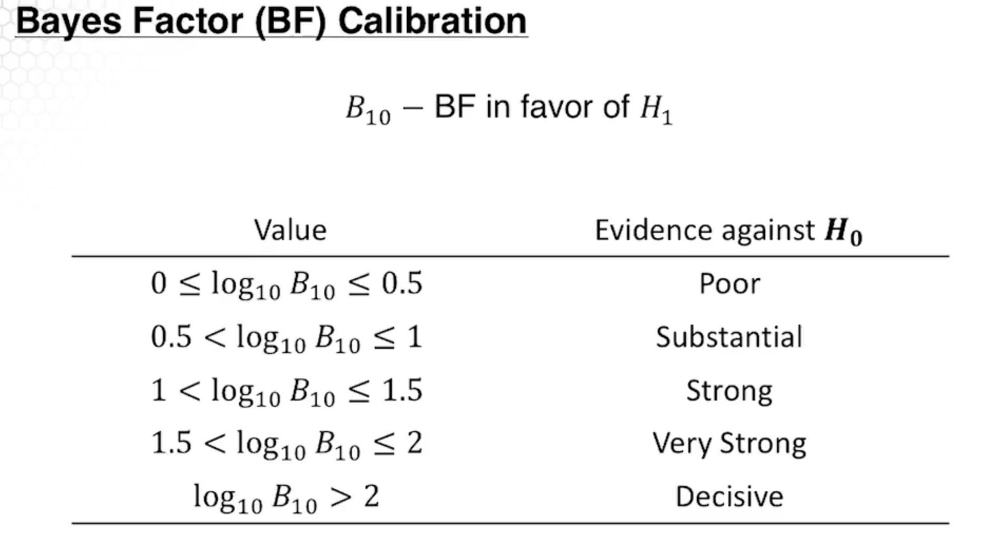
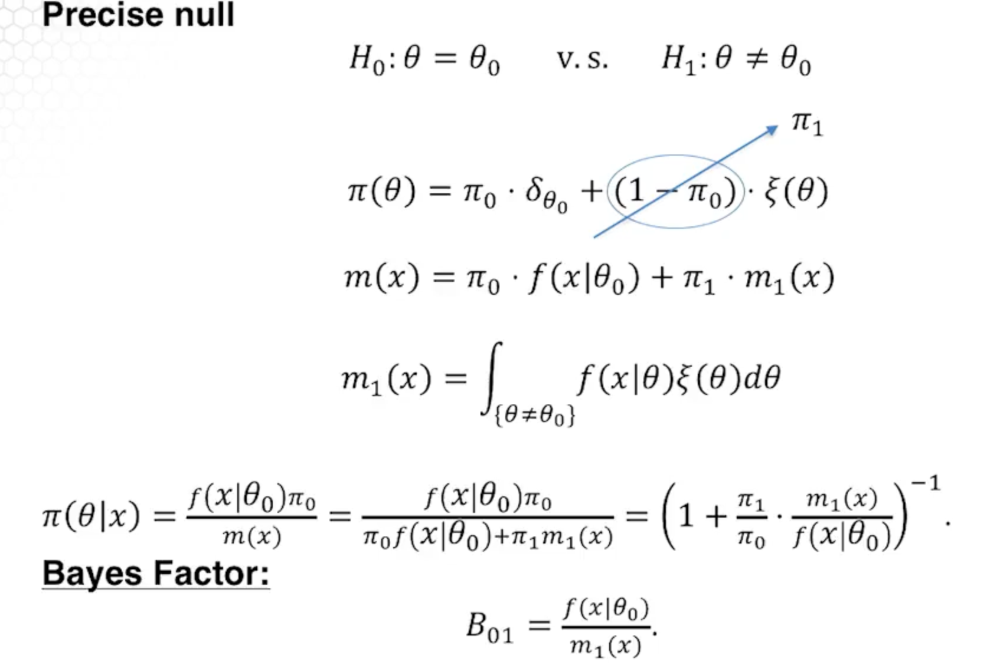
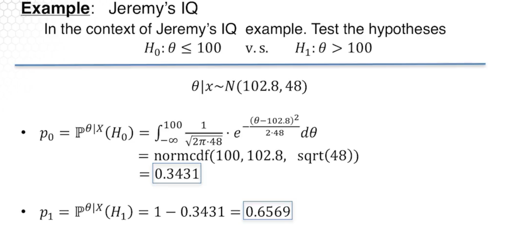

Bayesian Testing¶
Assume that \(\Theta_0\) and \(\Theta_1\) are two non-overlapping sets of parameter \(\theta\) (not necessarily a partition, just non-overlapping). We want to test:
\[H_0: \theta \in \Theta_0 \text{ vs } H_1: \theta \in \Theta_1\]
Conceptually simple:
\[\begin{split}
p_0 = \int_{\Theta_0} \pi(\theta|x)d\theta = \mathbb{P}^{\theta|X}(H_0) \\
p_1 = \int_{\Theta_1} \pi(\theta|x)d\theta = \mathbb{P}^{\theta|X}(H_1) \\
\end{split}\]
Choose the hypothesis with the larger posterior probability.
We have prior probabilities of:
\[\begin{split}
\pi_0=\int_{\Theta_0} \pi(\theta)d\theta \\
\pi_1=\int_{\Theta_1} \pi(\theta)d\theta \\
\end{split}\]
\(B_{01}\) - Bayes factor in favor of \(H_0\)
\[\begin{split}
B_{01} = \frac{p_0/p_1}{\pi_0/\pi_1} \\
B_{10} = \frac{1}{B_{01}}
\end{split}\]
Calibration¶

Precise null¶
A precise null \(H_0: \theta = \theta_0\) requires prior with point mass at \(\theta_0\).
The following is totally insane, maybe just focus on what bayes \(B_{01}\) is.

\[B_{10} = \frac{m_1(x)}{f(x|\theta_0)}\]
IQ Example¶

\[\begin{split}
\begin{align*}
\pi_0 &= \mathbb{P}^\theta(H_0) \\
&= \int_{-\infty}^{100} \frac{1}{\sqrt{2\pi \cdot 120}} e^{-\frac{(\theta-120)^2}{2\cdot120}}d\theta \\
&= 1.807 \\
\pi_1 = 1 - 1.807 = .8193 \\
\end{align*}\end{split}\]
\[\begin{split}
B_{10} = \frac{p_1/p_0}{\pi_1/\pi_0} = \frac{.6569/.3431}{.8193/.1807} = \frac{1.9146}{4.5340} = .4223\\
\end{split}\]
Notice that (this makes sense) $\(\frac{p_1}{p_0} = B_{10} \cdot \frac{\pi_1}{\pi_0}\)$
\[\log_{10}B_{01} = -\log_{10}B_{10} = .3744\]
This is not strong evidence in favor of \(H_0\).